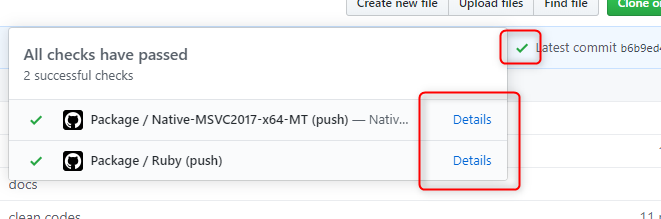
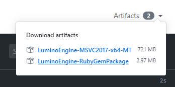

ダウンロード
最新リリース (0.10.0)
C++ (Windows Installer)
C++ (Windows, ZIP archive)
HSP3 (Windows, ZIP archive)
上記以外のパッケージは 現在開発中の最新ビルド を参照してください。
なお v0.10.0 では OpenGL サポートを外しているため、macOS, iOS, Web プラットフォームではグラフィックス機能を利用することはできません。
現在開発中の最新ビルド
リポジトリの GitHub Actions に紐づけられている Artifacts よりダウンロードできます。
リポジトリのページを開き、✔ マーク > Details > Artifacts から選択してください。


古いリリース
0.9.0
Windows (Installer)
Windows (ZIP archive)
macOS (ZIP archive)
0.8.0
Windows (Installer)
Windows (ZIP archive)
macOS (ZIP archive)
v0.7.0
Windows (Installer)
Windows (ZIP archive)
macOS (ZIP archive)
v0.6.0
Windows (Installer)
Windows (ZIP archive)
macOS (ZIP archive)